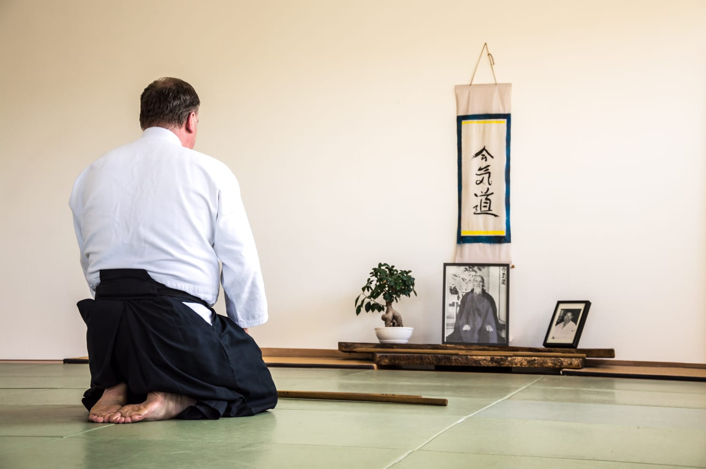
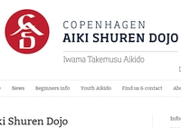
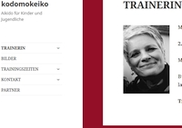

☰ Menu
Home
Dojo
Training
Links & Partner
Kontakt
Kiel Aiki Shuren Dojo
Links

Links
Interessante Links und Partnerseiten des Kiel Shuren Dojo.

Ethan Weisgaard 6.Dan, Dänemark
http://www.aiki-shuren-dojo.com

Aikido für Kinder und Jugendliche
https://www.aikido-kodomokeikodojo.de/
Aikikai Hombu Dojo
http://www.aikikai.or.jp
Akidojournal.de, Deutsches Aikido-Magazin
http://www.aikidojournal.de
Ibaraki Shibu Dojo, Iwama
http://www13.big.or.jp/~aikikai